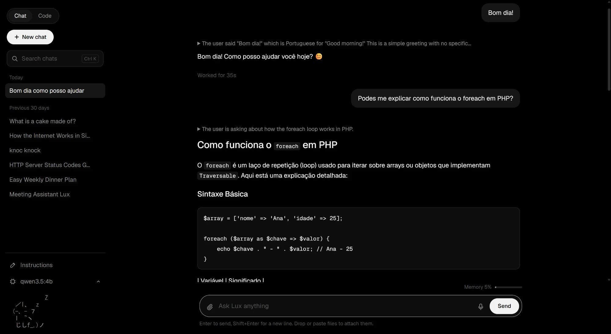

O desafio
Queria um assistente como o Claude Code ou o Codex, mas que funcionasse sem internet e sem enviar os meus ficheiros para lado nenhum.

O que fiz
- Dois modos: conversa simples, e programação dentro de uma pasta de projeto.
- No modo de programação lê, pesquisa, escreve e edita ficheiros e corre comandos, sempre a pedir autorização antes.
- Anexos de imagens, PDFs e ficheiros de texto.
- Instalação num clique que analisa a memória e a placa gráfica e recomenda o modelo certo.
- Entrada por voz com Whisper e, opcionalmente, modelos na nuvem.
Mais ecrãs

Como funciona
Um servidor em Python fala com o Ollama, que corre os modelos no computador. A interface é feita em HTML, CSS e JavaScript e abre numa janela própria.
O que aprendi
Como funcionam os modelos de linguagem por dentro de uma aplicação: contexto, ferramentas e limites de memória.